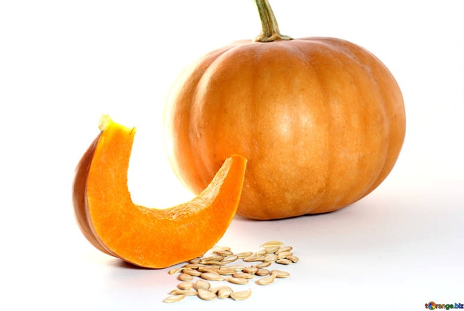
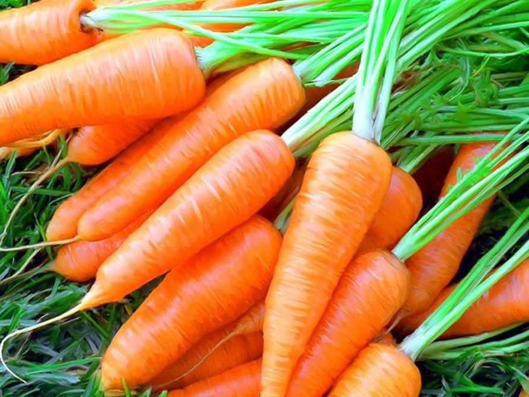
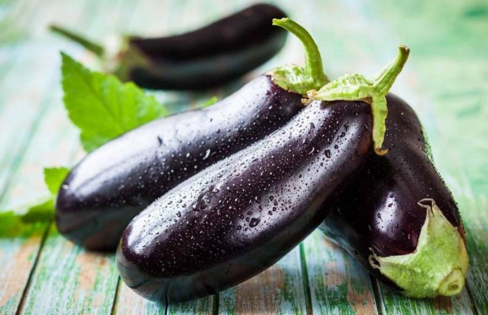
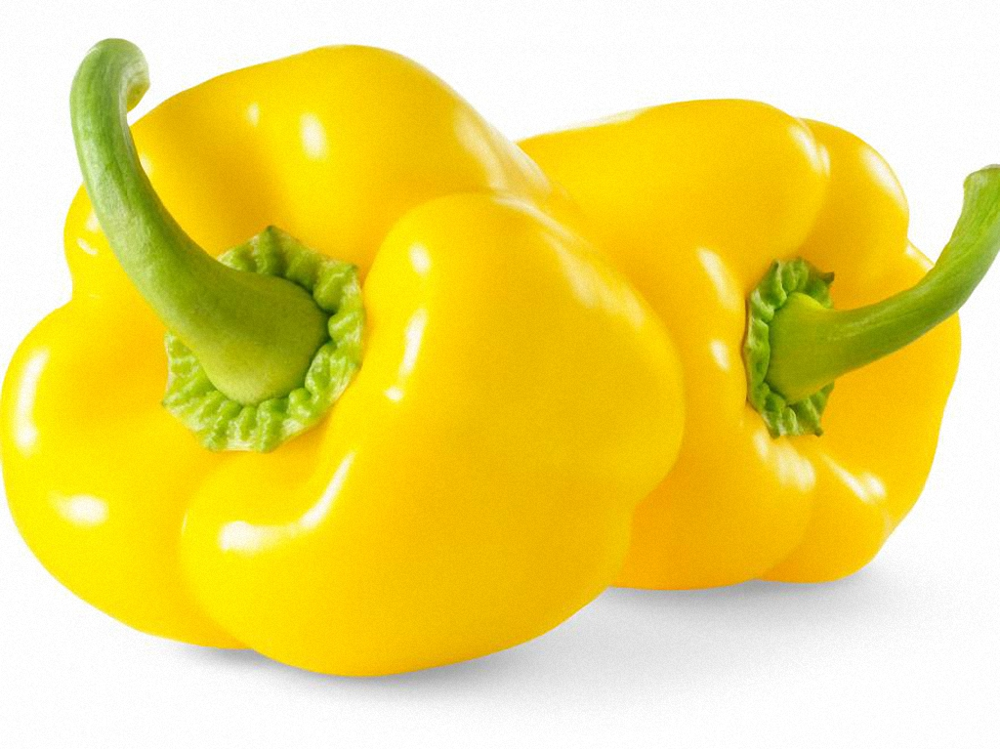
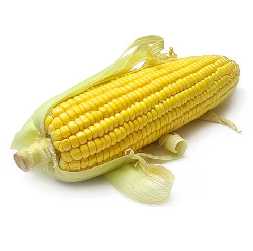
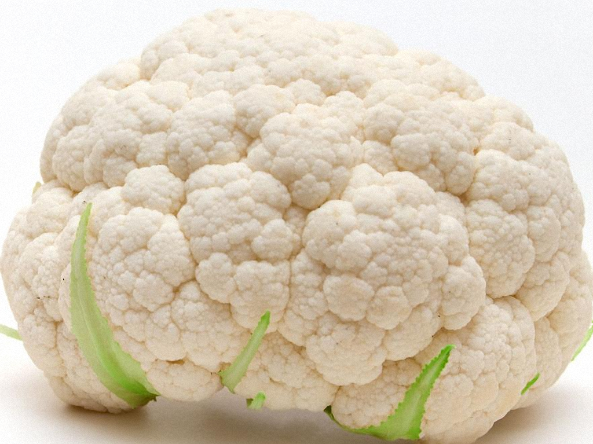
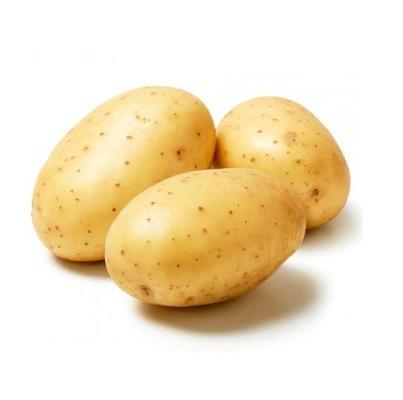
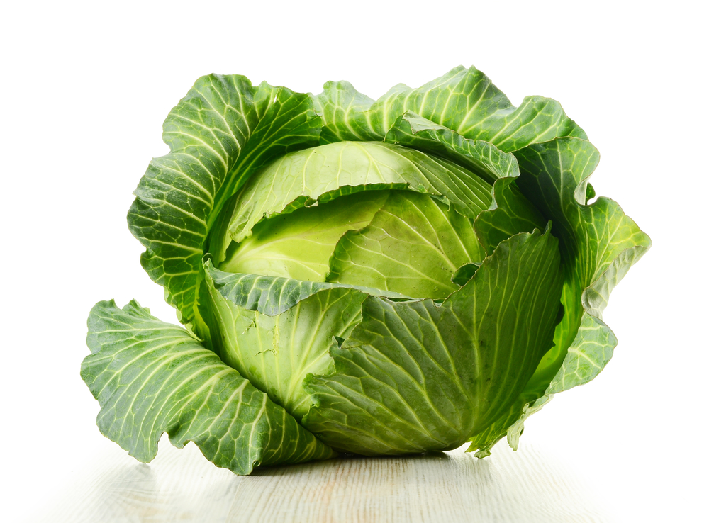

Кабачок — кустовая разновидность тыквы обыкновенной с продолговатыми плодами,
без плетей. Плоды могут быть зелёного, жёлтого, чёрного или белого цвета. Мякоть
нежная и быстроваркая.

Ты́ква — род травянистых растений семейства Тыквенные. Под словом «тыква»
в России обычно понимаются виды Тыква обыкновенная и Тыква гигантская,
широко распространённые и культивируемые как пищевое и кормовое растение.

Морковь посевная — двулетнее растение, овощная культура, подвид вида морковь дикая.
Обычно в быту под словом «морковь» подразумевается широко распространенный
корнеплод именно этого растения, который обычно относят к овощам.

Баклажа́н, или Паслён тёмнопло́дный — вид многолетних травянистых растений рода
Паслён. Возделывается как однолетнее растение. Съедобен только плод. В ботаническом
смысле это ягода, в кулинарном рассматривается как овощ. Известен также под
названием бадриджа́н.

Болгарский перец является плодом растений группы сортов Grossum вида Capsicum
annuum. Сорта растения дают плоды разного цвета, включая красный, желтый,
оранжевый, зеленый, белый и фиолетовый. Болгарский перец иногда объединяют с
менее острыми разновидностями перца как «сладкий перец».

Кукуру́за са́харная, также маи́с — однолетнее травянистое культурное растение,
единственный культурный представитель рода Кукуруза семейства Злаки.
Тома́т или помидóр — однолетнее или многолетнее травянистое растение, вид рода
Паслён семейства Паслёновые. Возделывается как ягодная культура; выращивается ради
съедобных плодов — сочных многогнёздных ягод различной формы и окраски, также
называемых томатами или помидорами.

Цветна́я капу́ста — распространённая овощная культура, один из культурных сортов вида
Капуста огородная. Относится к сортовой группе botrytis, как и романеско.

Чудо-овощ вырос в саду Светланы Самойловой под Талдомом.
Ее капуста кольраби весит целых девять килограммов.
Для сравнения Светлана купила капусту такого же сорта в магазине.
Овощ оказался совсем не рекордный — не дотянул даже до двух килограммов.

Самый тяжелый редис в мире был выращен в Японии Манабу Ооно,
его вес составил 31,1 кг. 11. Самая большая в мире репа была
выращена Скотом и Марди Робб на Аляске, ее вес составил 17,7 кг